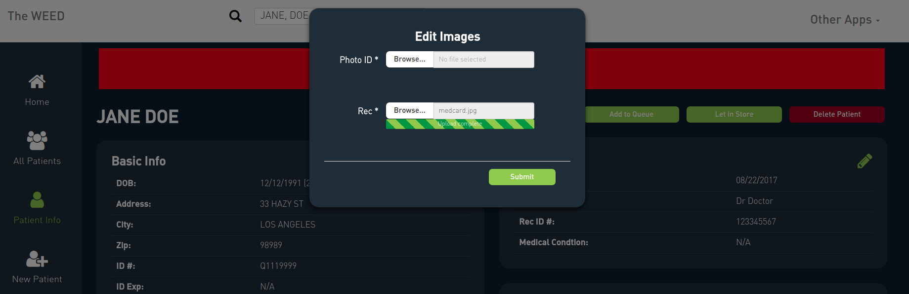
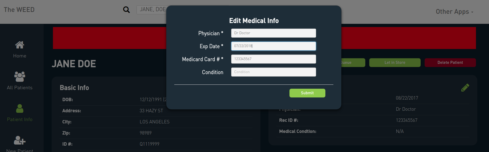
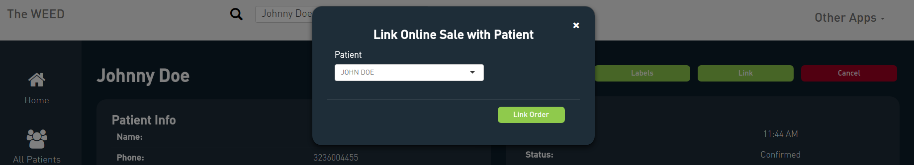

Chapter 2 Frontdesk
The Frontdesk is where every dispensary first makes contact with their clients. Dispensaries must keep track of all customers and verify that they are valid medical marijuana patients. The CannaData Frontdesk page makes this easy by providing a custom interface for checking in and accepting new patients.
2.2 Returning Patients
For returning clients, the front desk is responsible for:
Validating a person is who they say they are
Confirming they are a medical marijuana patient
Controlling how many customers are allowed in the store at one time, and making sure that they are processed in the correct order
If the patient preordered, making sure their preorder is processed correctly
All patient interactions begin by scanning the client’s state issued ID. For returning customers this will pull up the patient’s profile where the budtender can quickly see the patient’s current medical status, as well as other basic information about the patient. With a single button press, valid patients can be allowed into the store, or if there is a line to get in, added to the patient queue.
Returning Patient Info
The patient info page provides basic data about the patient, as well as their medical info. The box at the top displays the number of days left until the patient’s medical card expires. When expired, the box is red.
Expired Patient
The page also displays the number of reward points the patient has accumulated, and a pie chart with the product types from the patient’s purchase history.
Patient Data
You can view details of past transactions by selecting a row from the patient history table.
Past Transaction
For patients with expired medical cards, the patient info page lets you edit and update the patient’s medical info.
 
You can also access a patient’s info page by scanning their ID, searching for them in search box at the top, or by selecting them from the All Patients tab.
All Patient Table
The All Patients tab also allows you to view, which patient profiles are incomplete, and which registered patients have expired medical cards.
2.2.1 Queue
The homepage of the Frontdesk app keeps track of online sales, who is currently in the store, and who is currently in line to get in the store (queue). These tables make it easy to see who is next in line, and how long people have been waiting. Online sales are discussed in greater detail here.
Queue
2.3 New Patients
For new patients, when their ID is scanned a message will appear indicating that the patient is new. The budtender has the option to add the new patient which initiates the patient sign-up process.
Add New Patient Screen
When the patient’s ID is first scanned, the information from their ID is automatically added, however their profile is incomplete. The budtender must upload the patient’s documents, and enter a small amount of information from the patient’s medical card, specifically the name of their doctor, the expiration date, and the medical card ID number.
Empty New Patient Form
Completed New Patient Form
While the budtender enters this information, the patient is presented with an iPad (or other tablet or computer) where they enter their information into the Signup application discussed below.
2.3.1 Signup
The Signup application works in conjunction with the Frontdesk app to let new patients quickly join a dispensary. When a new patient’s ID is scanned they are added to the database, but their profile is incomplete. The budtender must input the patient’s medical information (discussed above), and the patient must complete the signup form (and sign the patient agreement), before they can enter the store. The first page of the signup form contains an input where the budtender can select the incomplete profile of the new patient. Typically there is only one incomplete profile at a time, in which case the one incomplete profile is automatically selected.
The budtender would hand the iPad over to the new patient who would fill out the rest of the form. The first page of the signup form is automatically filled in based on the information on the patient’s driver’s license.

Autofilled Basic Info
There are four additional pages where the patient fills in their contact info, and preferences.

Contact Info

Preference Info

Preference Info

Other Info
After the patient completes the form they are automatically sent to DocuSign where they digitally sign the new patient agreement contract. This makes the signup process completely paperless.
2.4 Online Orders
Whenever new online orders are made a notification will appear in the bottom right corner of the frontdesk app, and the new order will appear in the online orders table in the homepage. We will discuss the online menu, and online ordering process in more detail in the Online Orders chapter, so for now we will just focus on processing online orders at the frontdesk.
New Online Order
When you first receive a new order it is unconfirmed. Select the order by either pressing the alert in the bottom right, selecting the order in the table in the homepage, or by selecting the order in the search bar at the top.
Online Order Info
The order info page allows you to do several things:
- You can edit items
Edit Online Order
- Print labels
Select printer for labels
- Confirm
Send confirmation message
- Cancel
Send cancellation message
Once an order is confirmed the alert in the corner will go away, and the status in the main table will update.
Confirmed order
Patient is checked in
When the patient comes to pick up their order you must check them in like any other patient, as discussed above. Once they are checked in you link the online order with the checked in patient by clicking the “Link” button in the online order page.
Link button
 Once the order is linked to the patient, they can proceed to the cash register where they can quickly complete the transaction.